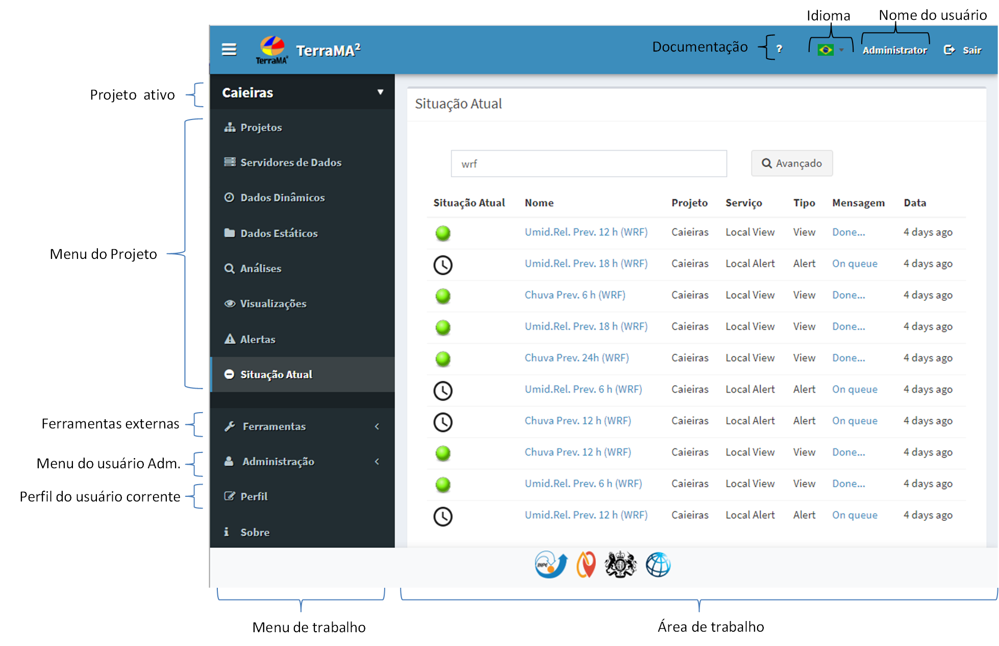
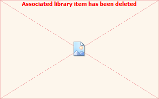

Módulo de Administração
O Módulo de Administração da plataforma TerraMA2 utiliza uma interface web que pode ser acessada a partir de qualquer navegador. O acesso ao módulo é somente por um usuário cadastrado que terá acesso a interface apresentada na Figura 2.1, com destaque aos principais componentes. Neste módulo o usuário administra as contas de usuário, serviços e os projetos, incluindo as definições dos servidores de dados, dados dinâmicos, dados estáticos, análises, visualizações e alertas, entre outras opções.

Figura 2.1 – Módulo de Administração.
Os principais itens da interface deste módulo são:
- Nome do usuário: nome do usuário atualmente conectado a plataforma.
- Idioma: opção de escolher idioma português, inglês ou espanhol.
- Documentação: “?” acesso a documentação geral da plataforma. O mesmo caractere “?” na área de trabalho direciona a documentação específica.
- Projeto ativo: nome do projeto ativo no momento. Clique para trocar de projeto. Todos os projetos de todos usuários estarão disponíveis.
- Menu –
 Projetos: acesso a lista de projetos para edição e adição de novos.
Projetos: acesso a lista de projetos para edição e adição de novos. - Menu – Servidores de Dados: acesso a servidores de dados locais ou remotos do projeto ativo.
- Menu – Dados Dinâmicos: dados ambientais dinâmicos locais ou remotos disponíveis em servidores do projeto ativo.
- Menu – Dados Estáticos: mapas geográficos (vetoriais ou matriciais) disponíveis em servidores do projeto ativo.
- Menu –
 Análises: análises com dados estáticos e dinâmicos a serem executadas no projeto ativo.
Análises: análises com dados estáticos e dinâmicos a serem executadas no projeto ativo. - Menu – Visualizações: definição de visual e estilo dos dados estáticos, dinâmicos e análises do projeto ativo, assim como gráficos associados.
- Menu – Alertas: configuração dos alertas a serem enviados aos usuários do projeto ativo.
- Menu –  Situação Atual: apresenta as últimas tarefas executadas por cada serviço de todos os projetos em atividade.
- Ferramentas externas: link para ferramentas externas e sites de interesse geral. Lista pode ser editada na configuração da plataforma.
- Menu – Administração: somente para usuário com permissão de administrador.
- Serviços: define, configura e administra os serviços que serão utilizados pelos usuários em seus projetos
- Usuários: lista de usuários, administradores ou não.
- Perfil do usuário corrente: lista dos atributos do usuário ativo.
- Menu de Trabalho: acesso a todos itens acima. Pode ser oculto para aumentar a área de trabalho através do botão na barra superior da interface.
- Área de Trabalho: área destinada a apresentar as propriedades de cada item do menu.